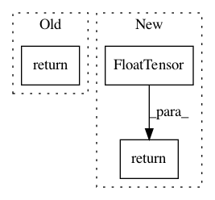

e2ec9a36878944e2157d2dfd03b81368b633939f,ptan/agent.py,DQNAgent,__call__,#DQNAgent#,44
Before Change
v = v.cuda()
q = self.dqn_model(v)
actions = self.action_selector(q)
return actions.data.cpu().numpy()
class TargetNet:
After Change
self.action_selector = action_selector
def __call__(self, observations, states):
v = Variable(torch.FloatTensor(observations))
if env_params.get().cuda_enabled:
v = v.cuda()
q_v = self.dqn_model(v)
q = q_v.data.cpu().numpy()
actions = self.action_selector(q)
return actions, states
class TargetNet:
In pattern: SUPERPATTERN
Frequency: 3
Non-data size: 3
Instances
Project Name: Shmuma/ptan
Commit Name: e2ec9a36878944e2157d2dfd03b81368b633939f
Time: 2017-10-03
Author: max.lapan@gmail.com
File Name: ptan/agent.py
Class Name: DQNAgent
Method Name: __call__
Project Name: nerox8664/pytorch2keras
Commit Name: 7e393ee9a334ff30b264ac2c822d3cda45ac9da8
Time: 2019-01-01
Author: nerox8664@gmail.com
File Name: tests/layers/constants/constant.py
Class Name: FTest
Method Name: forward
Project Name: milesial/Pytorch-UNet
Commit Name: 4063565295aae8f739b006ac5ab814c12bd8a81e
Time: 2017-08-17
Author: milesial@users.noreply.github.com
File Name: myloss.py
Class Name:
Method Name: dice_coeff